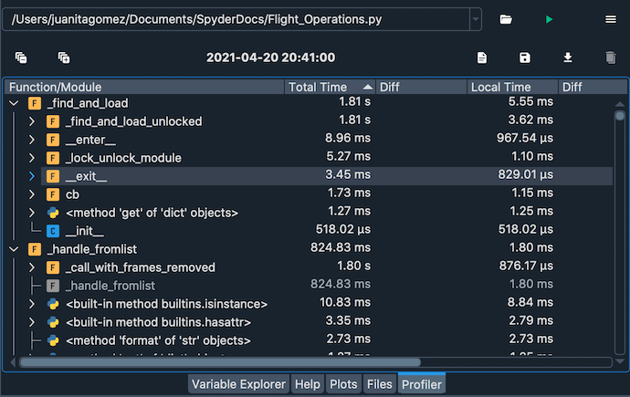
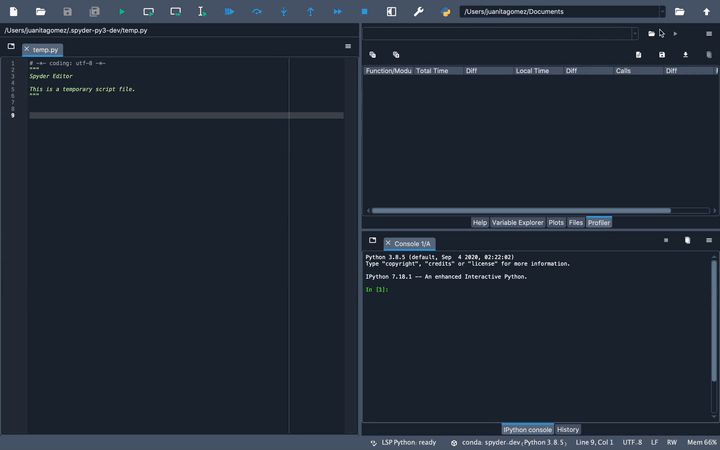
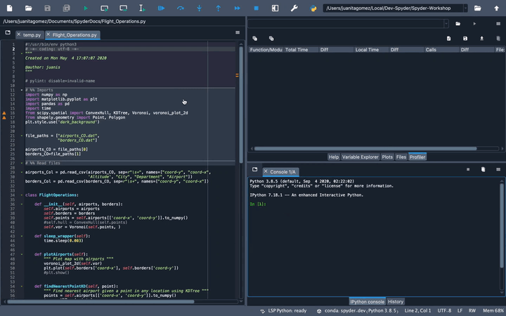
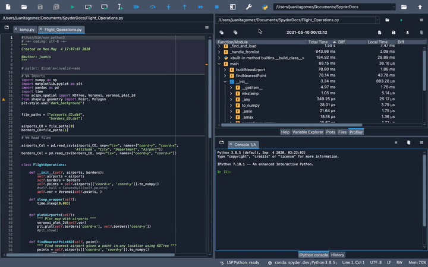
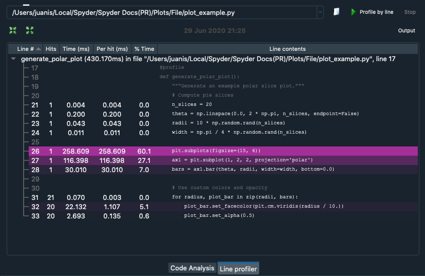

Perfilador (Profiler)#
El panel Perfilador (Profiler) determina recursivamente el tiempo de ejecución y el número de llamadas para cada función, y el método llamado en un archivo, dividiendo cada procedimiento en sus unidades individuales más pequeñas. Esto te permite identificar fácilmente los cuellos de botella en tu código, te indica las sentencias exactas más críticas para la optimización, y mide el delta del rendimiento después de los cambios de seguimiento.
Ejecutando el Perfilador (Profiler)#
Puedes buscar un archivo usando el botón «Seleccionar archivo de Python», ubicado a la derecha del cuadro de ruta del perfil (arriba a la izquierda del panel), que ejecutará automáticamente el perfilador sobre este archivo.
Puedes introducir manualmente la ruta en el cuadro de ruta del panel y luego ejecutar el análisis en el archivo pulsando Ejecutar el perfilador en el panel del Perfilador (Profiler).
También puedes ejecutar perfiles para el archivo que está actualmente abierto en el Editor haciendo clic en en la barra de menú, o usando un acceso directo configurable (F10 por defecto).
Si quieres cancelar una ejecución en curso, haz clic en el botón Detener el perfilador en la parte superior derecha, y si el perfil falla por cualquier razón, se mostrará el diálogo Salida del perfilador indicando el error que ha ocurrido.
Al hacer doble clic en un elemento del Perfilador, serás llevado al archivo y a la línea en el Editor donde fue llamado.
Puedes aumentar el número de niveles mostrados para un objeto en particular haciendo clic en las flechas desplegables a la izquierda del nombre, y expandir/contraer todos los elementos con los botones de la parte superior izquierda.

Haciendo clic en el menú desplegable o pulsando la tecla Flecha abajo en el campo de nombre de archivo, puedes recuperar las rutas de acceso de los archivos perfilados anteriormente.

Finalmente, puedes guardar los datos para una ejecución dada en el disco como un archivo con el .Result usando el botón Guardar información de perfilado. Esto se puede cargar para comparar con una ejecución anterior del mismo archivo usando el botón Cargar datos. Para eliminar los datos cargados, haga clic en el botón Limpiar comparación.
Interpretar los resultados#
Los resultados son desglosados por función/método/sentencia, con cada subelemento listado jerárquicamente bajo el elemento de nivel superior que los llama. Tiempo total es el tiempo que tarda el objeto especificado y todas las funciones «debajo» del objeto(es decir, las llamadas por el objeto), mientras que Tiempo Local solo cuenta el tiempo empleado en el ámbito propio del objeto en particular. La columna Llamados muestra el número total de veces que el objeto especificado fue llamado en ese nivel dentro de su función de llamada primaria o dentro del ámbito __main__, si se trata de un objeto de nivel superior. Finalmente, los números en la columna Diff para cada uno de los tres aparecen si se carga una comparación, e indican los deltas entre cada medición.
Por ejemplo, supongamos que ejecutaste el Perfilador (Profiler) en un archivo que llama a una función sleep_wrapper(), que a su vez llama a la función sleep(); y la función sleep_wrapper() tardó un total de 3.87 ms en ejecutarse, de los cuales 3,86 ms se dedicaron a ejecutar la función sleep() dentro de ella. Por lo tanto, si sleep() no llama a ninguna otra función, su Tiempo total y su Tiempo local serían idénticos a 3.87 ms. Mientras tanto, el Tiempo total para sleep_wrapper() sería de 3.86 ms, pero el Tiempo local sería solo de 0.01 ms , ya que el resto se gastó en la función sleep() a la que llamó.
Plugins del perfilador#
Hay dos plugins adicionales que puedes instalar para habilitar otros tipos de perfiles en Spyder. En primer lugar, Spyder Line Profiler te permite analizar cada línea de tu código individualmente. Para obtener más información, visita el spyder-line-profiler git repository.
Segundo, el Spyder Memory Profiler mide el uso de memoria de tu código. Para más información, ve a spyder-memory-profiler git repository.